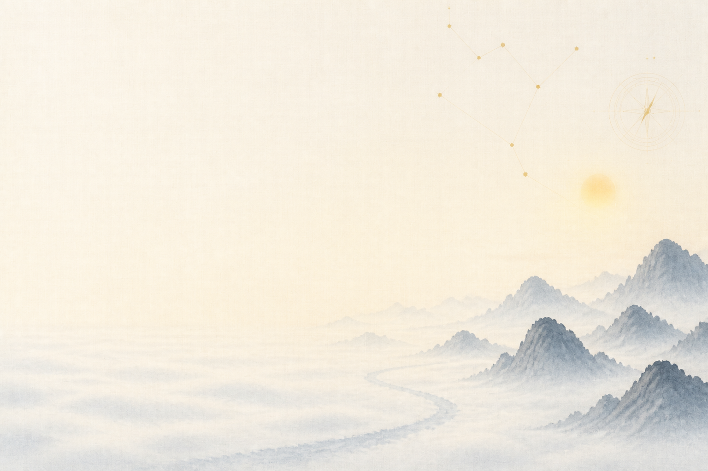
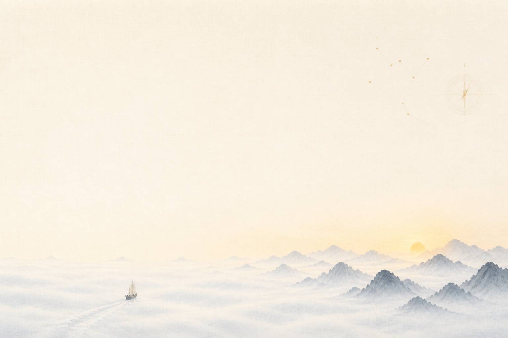
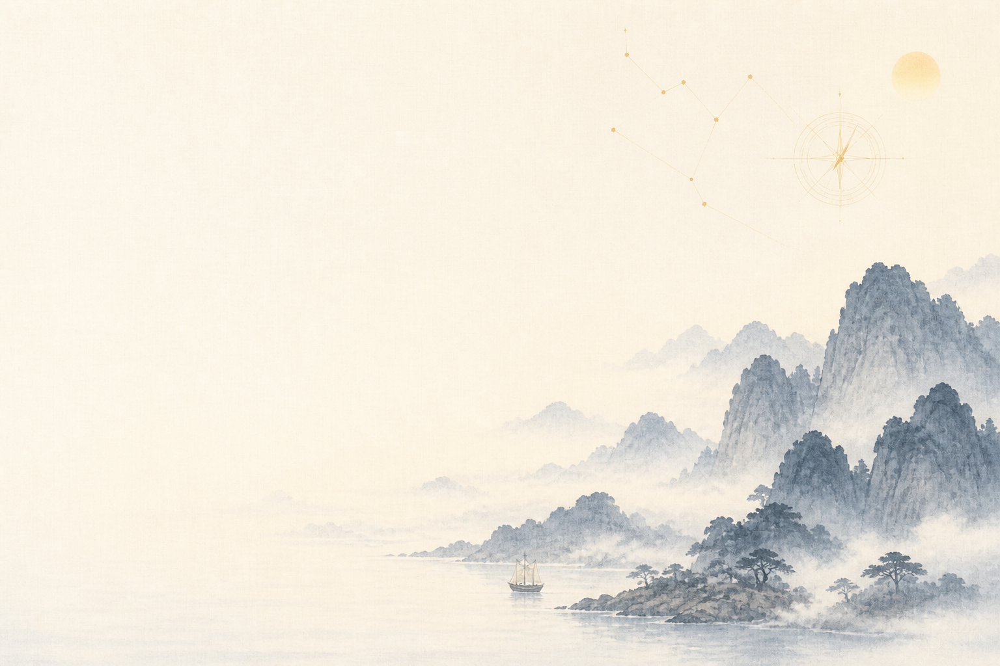
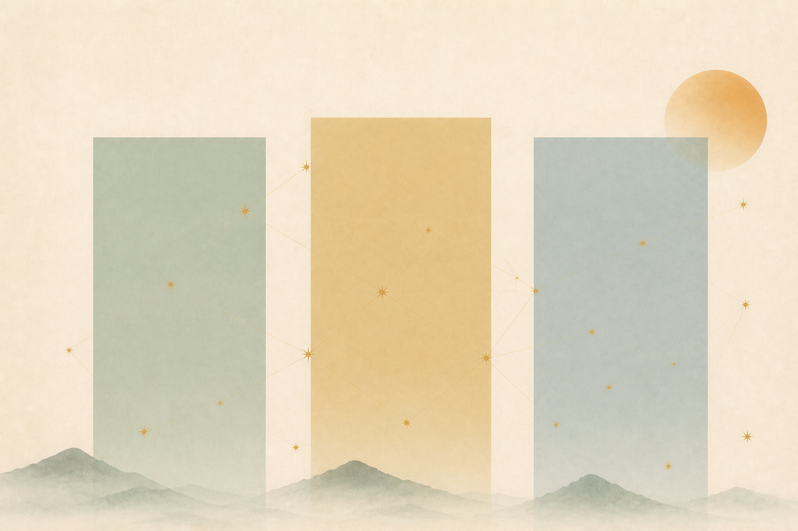
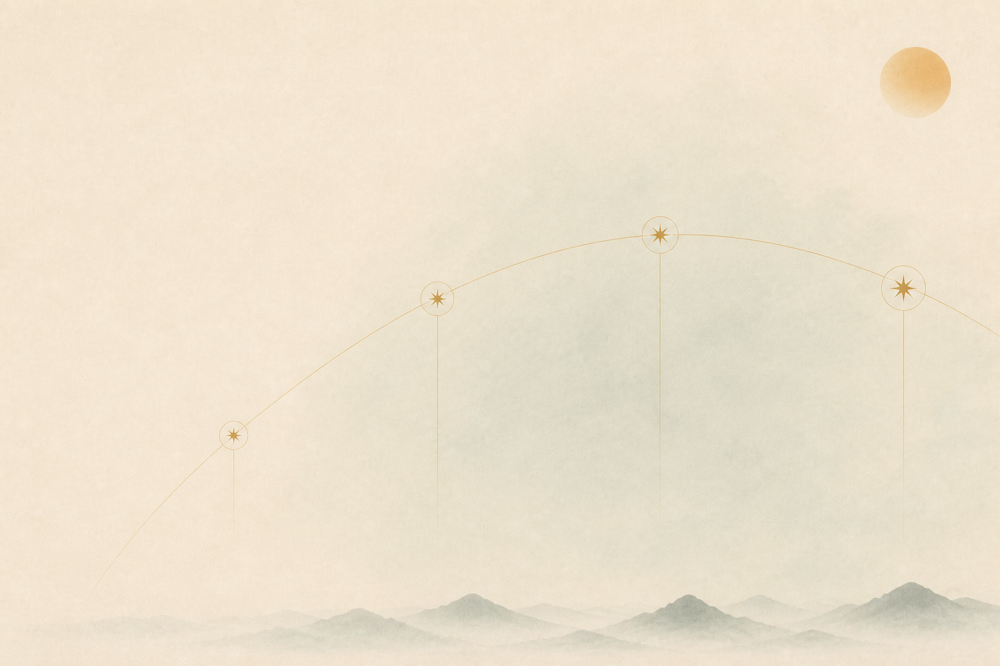

格物where I have worked
I lead strategic research in complex systems where trust is the product: security, privacy, and now AI.



Staff UX Researcher — security, privacy, and now AI

格物where I have worked
I lead strategic research in complex systems where trust is the product: security, privacy, and now AI.

致知where I was trained
Trained in experimental science, I bring a lab scientist's rigor to a very human question: what should we build, and why?


四方practice areas
How people decide whether to rely on a system they cannot fully see.


理philosophy
A four-phase arc.